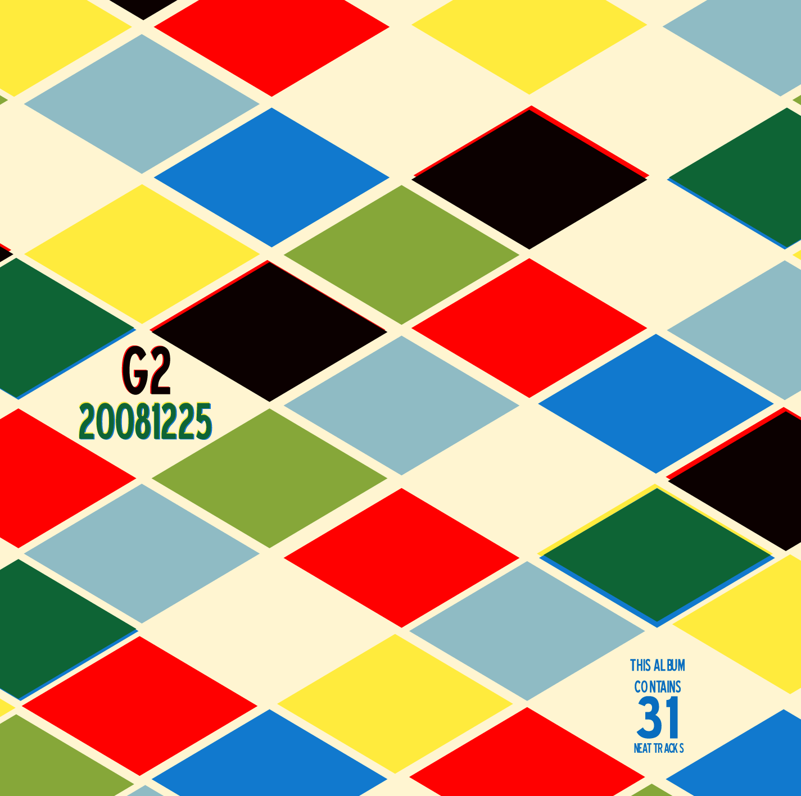

G2 20081225
 I couldn't wait. I'm excited for Christmas, and having completed this new G2 mix almost two weeks before the big date, I just had to bust it out. On the previous G2 I said I wouldn't wait so long to complete the next one. Not only did I improve on the previous time gap of one year, but this very well could be the closest together any two G2's have been since Maria and I were dating. As nice as you are to read these unimportant things, I imagine you're only wanting to get down to the music.
I couldn't wait. I'm excited for Christmas, and having completed this new G2 mix almost two weeks before the big date, I just had to bust it out. On the previous G2 I said I wouldn't wait so long to complete the next one. Not only did I improve on the previous time gap of one year, but this very well could be the closest together any two G2's have been since Maria and I were dating. As nice as you are to read these unimportant things, I imagine you're only wanting to get down to the music. Having previously knocked out the 70's on a G2 I wanted to venture even further backwards and tackle the 60's. All music on this ablum is from the Billboard Top 100 from the 1960's. Additionally, I couldn't decide which album cover I liked more, so I ended up going with two. I'll discuss the design of those further on. I've grouped the new covers in with the older ones if you want to sneak a full-size peek. I warn you now, I'm a little long-winded on this one...
Having previously knocked out the 70's on a G2 I wanted to venture even further backwards and tackle the 60's. All music on this ablum is from the Billboard Top 100 from the 1960's. Additionally, I couldn't decide which album cover I liked more, so I ended up going with two. I'll discuss the design of those further on. I've grouped the new covers in with the older ones if you want to sneak a full-size peek. I warn you now, I'm a little long-winded on this one...
The longest (in number of songs) single disc album created for Maria has these awesome tracks:
|Track|Title|Artist|Duration|Year|Position| |---|---|---|---|---|---| |1|Stand by Me|Ben E. King|2:53|1961|52| |2|Everlasting Love|Robert Knight|2:47|1967|90| |3|Dream Baby (How Long Must I Dream)|Roy Orbison|2:32|1962|80| |4|Finger Poppin' Time|Hank Ballard \& The Midnighters|1:52|1960|40| |5|Handyman|Jimmy Jones|2:04|1960|20| |6|Another Saturday Night|Sam Cooke|2:40|1963|90| |7|Baby Now That I've Found You|The Foundations|2:38|1968|83| |8|Baby (You've Got What It Takes)|Brook Benton \& Dinah Washington|2:47|1960|54| |9|You Are My Sunshine|Ray Charles|3:01|1962|97| |10|More Today Than Yesterday|Spiral Starecase|2:49|1969|50| |11|My Cherie Amour|Stevie Wonder|2:53|1969|32| |12|Everybody's Talkin'|Harry Nilsson|2:49|1969|73| |13|Poetry In Motion|Johnny Tillotson|2:34|1960|42| |14|Let Me In|The Sensations|3:05|1962|44| |15|Let's Dance|Chris Montez|2:30|1962|60| |16|You Must Have Been a Beautiful Baby|Bobby Darin|2:16|1961|98| |17|Let's Think About Living|Bob Luman|2:09|1960|94| |18|Hooked On a Feeling|B.J. Thomas|2:48|1969|99| |19|So Much In Love|The Tymes|2:09|1963|26| |20|Midnight Mary|Joey Powers|2:28|1964|82| |21|Hello Mary Lou (Goodbye Heart)|Ricky Nelson|2:18|1961|31| |22|Rhythm of the Rain|The Cascades|2:31|1963|19| |23|Sixteen Reasons|Connie Stevens|1:58|1960|18| |24|I Love The Way You Love|Marv Johnson|2:36|1960|90| |25|Bread and Butter|Newbeats|2:05|1964|24| |26|Treat Her Right|Roy Head|2:07|1965|43| |27|Can't You Hear My Heartbeat|Herman's Hermits|2:18|1965|28| |28|Hold Me Tight|Johnny Nash|2:43|1968|37| |29|Sunny|Bobby Hebb|2:44|1966|34| |30|Wild Thing|The Troggs|2:35|1966|27| |31|Sunshine Superman|Donovan|3:15|1966|38|
There are a handful of things you might or probably might not care about. This album has...
- The most number of songs on an single disc in all G1 or G2 mixes at 31. Previously that record was held by the first disc of the 1970's G2 (G2 20071012, which had 25.
- The average/mean original chart placement and year of 54.7 and 1963.7, the median original chart placement and year of 44 and 1963 (which means just as many songs appeared below that position/year as did above), and the mode (or most commonly appearing) placement/year of 90/1960. Overall these stats say I picked songs fairly low in the charts, and closer to the beginning of the decade.
- An average song length of 2:32, with #31 Sunshine Donovan pushing the high end at 3:15 and #4 Finger Poppin' Time slacking off.
- Not a single Beatles song in what would be their prime time (since the band only existed in the US from essentially 1964-1970. Although moderately surprising that I didn't include any of their songs, the songs of theirs that appeared on the year-end charts were in too popular to include on a collection like this. I doubt I could pick just one song to symbolize them as a whole, which is why I've already included 13 songs by them across all 22 mixes. As a side note, it was very clear to me the impression The Beatles made on music during this decade (and forever more). 1960-1963 had a very peppy, bubblegum sound to it, and even in to 1964. I'm not sure how many songs The Beatles had released, but they did take up 10% of 1964's year-end chart and have a much different sound to them. It is mind-blowing how different 1965 and onward sound. I'm not sure whether to attribute that new sound entirely to The Beatles, but it is certain they contributed. You may not like them as much as I do (or at all), but it's hard to fully comprehend their impact on the music we all enjoy now.
- 18 out-takes. This might be the highest number of dropped songs from any mix (I don't usually keep track of these). Although I was slightly aiming for another two-disc combo, after plowing through all 1000 songs in the charts, I had 50 songs (which would have been a lot), yet only 131.6 minutes, when I needed another 25-30 minutes to fill a second disc. Instead of putting in unworthy songs, I knew if I could whittle the songs I had down to 80 minutes I would have one of my best mixes yet.
- A near perfect album length of 79:56 (when using 2-second song gaps). Normally the discs I use claim to hold 80 minutes of music, so I was within 4 seconds of perfection. With as many out-takes as I had, I was able to pick and choose songs to fill that album as well as I did.
- No lemons. Usually I put some joke songs on a mix, or a song that doesn't quite fit in. Although song #25 Bread and Butter might be considered that, to me it's more of a classic song. The ending songs on an album are usually the ones I consider more of a joke, or songs that don't fit the theme. Personally I view this album ending on more of a rockin' note as opposed to the smoother vibes (and cheesier lyrics) of songs #19-#23.
- The original version of Handy Man. I always thought it was by James Taylor, completely unaware that Jimmy Jones (and Otis Blackwell) were the original artists. Although I thoroughly enjoy Sweet Baby James' slowed-down version, Jimmy's peppier quicker version is very fun. (Thanks to Wikipedia for the skinny on this song)
- Two album covers, which has never happened. I'll soon detail that extensively.
Although I found several candidates, I really liked this Amiga envelope as well as this HMV envelope. Allow me to disect each one individually:
Amiga

Obviously derived from this Amiga record envelope I really liked the feel of this cover. It shows a man playing music for a woman, who is obviously her own safetey hazard, as well as enjoying the music. Although it has a slightly older feel than the 60's, I knew I could redraw it, and make any additions for the additional real estate on the back. I found the Bodoni typeface to be the perfect replacement of the original Amiga type on the front, and cheated with the Blue Highway typeface to do the smaller type. Although the details are lost in almost anything but the original on-screen version, I attempted a small bit of aging and weathering on the illustration. If I actually owned something like Mister Retro's awesome Machine Wash Filters, I could have pulled off a true weathering/aging.

On the tip of a friend, I decided to draw the backside of the same people for the back of the album. I knew I would have to draw the back of their heads, and change some layers, but had more fun in drawing another arm for the lady, and the front of the car. The track listing is far from special, and you'll see it similarly carried over to the other album cover. I could/should probably spend more time on these details, but no matter which way I spun it 31 songs is a long 'ol list.
HMV

Strongly inspired by the previously mentioned HMV recored envelope, I aimed for this one that I felt was more fitting to the sixties. I love this envelope, with the shapes, colors and especially the printing techniques. If you zoom in really close to the photo, you can see the gloriousness of imperfectly aligned printing plates. Allow me to illustrate:

Notice how the yellow and blue are overlaped to make the green, yet don't quite line up perfectly? Notice how the black is similarly printed, yet the red didn't quite match up? It's those little details that I really enjoyed and tried to propogate, not just in the pattern, but anything. On both the front and back Blue Highway did the job (this was the original album to use it, then I used it additionally on the Amiga album). I also knew this color pattern I could easily continue on my own. For this reason I did the full front cover, not just the front viewable area:

Also, with little effort I could make a back cover, and have it not be the same as the front:
Again, although I really liked the man/woman in the Amiga car, I felt the HMV envelope was more fitting to the 60's. I kept working on both figuring I would decide on an eventual winner as I got to the end, and obviously just settled on going with both. I enjoy the working on the artwork (as you can tell), so it didn't hurt my feelings to do both.
I don't have much more to share, but I hope you enjoy the music, and maybe find a song you've never heard that you enjoy, or at least are reminded of an oldie-but-goodie. What a shame that this stuff is starting to fade off of the airwaves. What a pleasure it was to make this album, and all for the most special person in my life. Maria, I love you. Merry Christmas, two weeks early :).